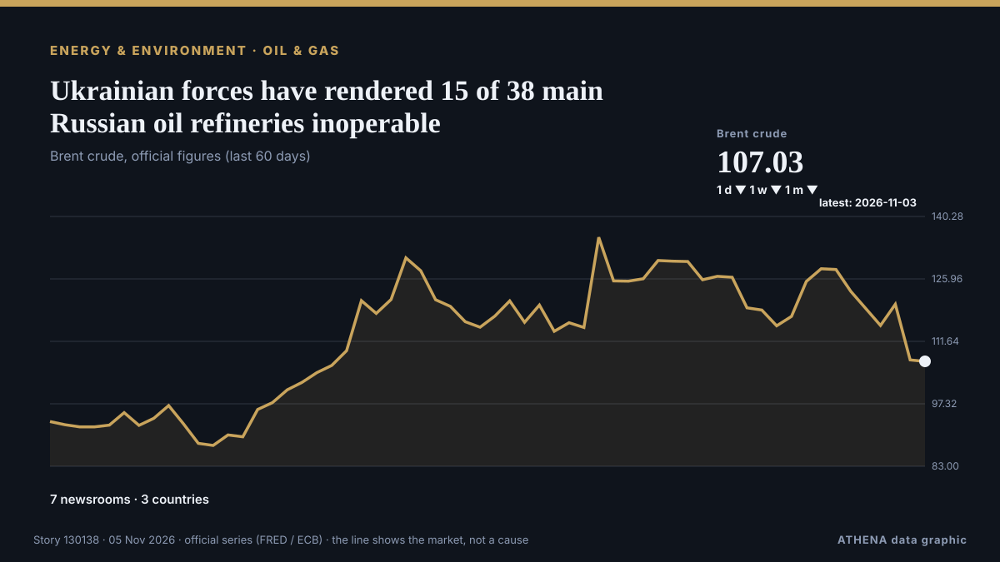

Нефть и газ
СпонсорПри поддержке  Cybernetics and Artificial Intelligence Lab Welcome to the Cybernetics and Artificial Intelligence Laboratory, established at the Department of Business Administration of the National and Kapodistrian University of Athens. The lab is headed by Professor Dimitrios Thomakos. The lab aims to do research that can be published in top venues. Our research uses tools and methods of Artificial Intelligence, and lies in the following areas: - Forecasting - Decision making - Cyber security - Finance We are always looking forward to collaborating with exceptional students!
Cybernetics and Artificial Intelligence Lab Welcome to the Cybernetics and Artificial Intelligence Laboratory, established at the Department of Business Administration of the National and Kapodistrian University of Athens. The lab is headed by Professor Dimitrios Thomakos. The lab aims to do research that can be published in top venues. Our research uses tools and methods of Artificial Intelligence, and lies in the following areas: - Forecasting - Decision making - Cyber security - Finance We are always looking forward to collaborating with exceptional students!
| 23 окт. | 0 |
|---|---|
| 24 окт. | 0 |
| 25 окт. | 1 |
| 26 окт. | 2 |
| 27 окт. | 0 |
| 28 окт. | 0 |
| 29 окт. | 1 |
| 30 окт. | 0 |
| 31 окт. | 0 |
| 1 нояб. | 1 |
| 2 нояб. | 8 |
| 3 нояб. | 9 |
| 4 нояб. | 1 |
| 5 нояб. | 1 |
Заголовки приводятся на английском языке, как они были опубликованы.

Ukrainian forces have rendered 15 of 38 main Russian oil refineries inoperable
Attacks by Ukrainian forces have shut down 15 major Russian refineries and forced 12 others to cut production, triggering domestic fuel supply shortages. из Ukrainska Pravda (English)
CVR Energies set to buy two Marathon refineries
CVR Energy has entered into a definitive agreement with subsidiaries of Marathon Petroleum to acquire Marathon’s St. из Ship.Energy
Borr Drilling Prospector 5 Rig Incident Update
Borr Drilling Limited provides an update on the Prospector 5 incident offshore Gabon, first announced by the Company on October. из Cyprus Shipping News
Aramco exploring expansion of East-West Pipeline that avoids Hormuz
Aramco is exploring alternative export routes and additional overseas storage capacity, including a possible expansion of the East-West Pipeline, which transports Saudi crude to Red Sea export hubs. из Free Malaysia Today
EU tells Turkey to ‘normalise relations’ with Republic of Cyprus
The European Commission on Wednesday called on Turkey to “normalise” its relations with the Republic of Cyprus, as it presented its annual report on the country’s progress towards accession to the… из Cyprus Mail
New Jersey governor warns port operators against importing Russian diesel
'As a Navy veteran, I cannot let that stand unchallenged. из Anadolu Agency (English)
Shell to sell NWS LNG stake to XRG
UK-based LNG giant Shell has agreed to sell its stake in the Woodside-led North West Shelf LNG project in Western Australia to Adnoc’s investment unit XRG. из LNG Prime
Syria says it foiled Hezbollah plot to attack Homs oil refinery
Nov 3 - Syrian security forces have arrested members of a cell linked to Lebanese Iran-backed militant group Hezbollah accused of planning to attack the Homs oil refinery in central Syria, state news… из The Straits Times
Oil rises as peace prospects dim after US hits Iran’s Qeshm Island
BENGALURU: Oil prices rose more than $1 on Tuesday, as an Iranian official said a deal to the end the war was far off, while the US struck Iran’s Qeshm Island, fuelling concerns over the escalation… из Arab News
Europe entering winter with lowest gas reserves since 2013, says IEA
Europe's natural gas storage reservoirs were 75% full at the end of October, well below the minimum target of 80% fixed by the European Union and at its lowest level in more than a decade. из Free Malaysia Today
Oil drops 7% as Iran signals openness to peace talks
Both oil benchmarks closed lower for the day. из The Business Times
Petronet LNG reports 52.3% growth in net profits, in talks for availing undelivered cargoes
Along with their results, Petronet LNG also declared a dividend of ₹7 per equity share. из The Hindu
Kazakhstan Resumes Oil Exports Through Russian Pipeline After Drone Attack
Kazakhstan resumed oil shipments through the Atyrau-Samara pipeline on November 3, a day after a drone attack on a Russian. из The Times of Central Asia
New Video Shows Fatal Explosion in Athens’ Plaka District
Security footage captures the blast that killed six people on September 21, while a second recording reportedly shows three suspects dividing stolen goods about an hour later. из to vima
Two Yaroslavl oil refinery staffers injured in Ukrainian drone attack — governor
According to Mikhail Yevrayev, electronic warfare systems and air defenses repelled the attack by 124 Ukrainian drones on the Yaroslavl oil refinery last night, and its infrastructure was damaged. из TASS (English)
World’s energy supply buffers have been eroded, ADNOC CEO says
The world has eroded its supply buffers by draining nearly 1 billion oil barrels from… из BusinessWorld
Fire breaks out at HPCL refinery in Visakhapatnam, no casualties reported
A fire broke out on Monday evening at Hindustan Petroleum Corporation Ltd's Visakh Refinery, causing significant concern in nearby industrial areas. из Times of India
Oil prices pull back sharply on signs of US-Iran diplomacy to end war
The cost of benchmark Brent crude dropped 7% on Monday to under 106 US dollars a barrel at one stage. из The Irish News (Belfast)
HUR Confirms Russian Su-57 Explosion at Akhtubinsk Airfield
Ukraine’s military intelligence confirmed a Russian Su-57 stealth fighter jet burned down at the Akhtubinsk airfield on Thursday, attributing it to an engine startup failure due to suspected low jet… из Kyiv Post